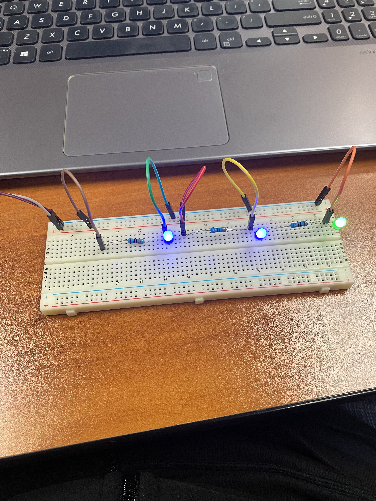
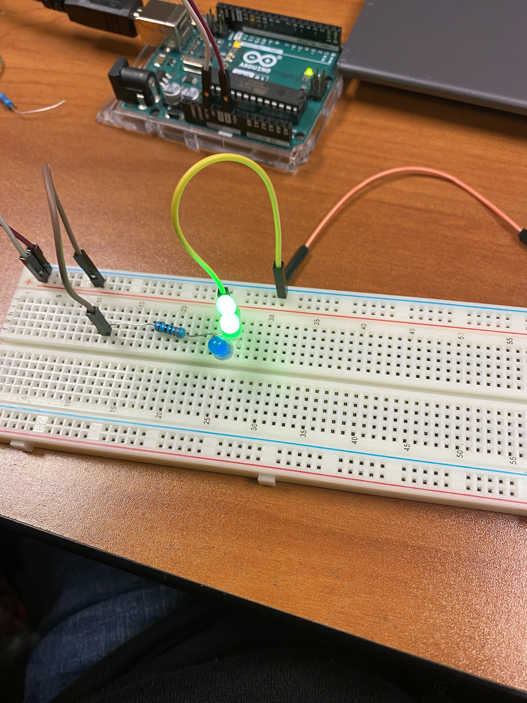
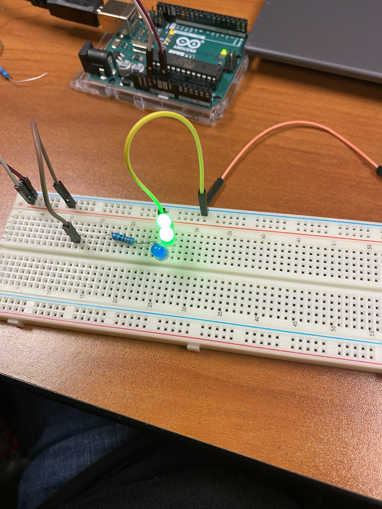
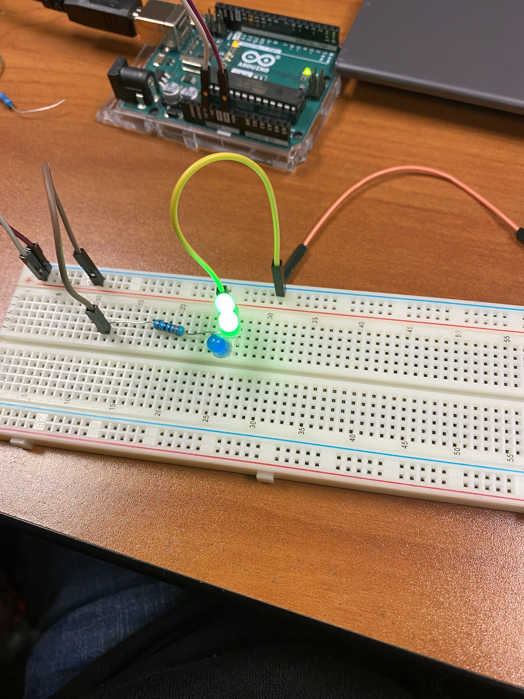

today's date is 9/1/2022 this week we started working on rube golder
today is 9/16/2022 and that we did this week was make a paper Boat and we also started on our challeng of bulding a goldbred mechin and so fair everything is going good that is all we did this week
today is 10/7/2022 and this week we disassemble the computer and it was really fun. Also, we had to make a worksheet of all of the parts in the computer then we had to color it in and name every part thats all we did this week.
Today is 10/14/2022 This week we learned about rockets and me and my group we learned about rockets and bomb. We had to design a tinkercad of our bottle rocket because that is our project for Aerospace Engineering. Next week we are going to design the Rocket and we are going to build/test it.
Today is 10/24/2022 This week we built a rocket an learned everything about how it launches. Our rocket had a coke bottle shell and covered with wings and a pointy tip. After the experiment it went really bad, and it didn't take off as we imagined it. Instead of taking off it went down to the floor and splashed water all over the place.
Today is 11/4/2022 This week we learned about breadboarding and we did it in tinkercad. We did 3 models, with different types of batteries. We learned how everythin works and net week were go to make a real life version off of our tinkercad. Also last week we learned how to filter dirty water by cutting a waterbottle in half and putting sand, cotton, gravel to filter dirty water. Our group did good and it was really clear water.
Today is 11/10 this week we learned about how to create a circuit, Last week and this week we did tinkercads for our circuit and we finished our circuit. Mr.Poole gave us a worksheet and we finished our circuit and worksheet. We made a real life version of our tinkercads. Last week we learned electric engineering and how to create a circuit. For challenge day this week we had to count weather we would take a Math Class or count to 1 Million, me and my partner choose the Math Class, and I think we explained it good.


Today is 12/02 this week we learned about Civil Engineering, and I was pretty interested in this topic. We learned how to build a brigade, and I'm sure our bridge will do really good. For challenge week we didn't do anything, all we did was continue on our spaghetti bridge project. I'm confident that we'll carry 15 pounds or more on our brigde. This week was chill and I like it.
Today is 1/13/23 This week was the week after christmas break. My christmas break was pretty fun, the week we came back we started to learn about shark tank and how to propose buisnesses and ideas to other people. Next week hopefully we will be done with out project and propose our shark tank deal.
Today is 1/20/23 This week we dSid our shark tank product and our product was scrubuddy and itś used to help mechanic shop workers with their dirty hands. In our proposal, we decided to do 700k for 10% of our company and no-one bought it but at the end of the day it was really fun doing it.
Today is 1/27/23 This week we learned about oobleck and it took us couple of attempts to get the right consistency but we got it. We played around with it and we saw how it worked, it was a lot of fun doing it but it was also a challenge not getting it on our clothes.
Today is 2/10/23 This week i worked on my project and I am almost done. I just need to put the wheels and the mouse trap. It turned out to be good after I tested everything out. Hopefully by the end of next week I will be done and start testing the week after.
Today is 2/17/23 This week I started building the body of my mousetrap car and I finished installing the mousetrap and cutting out the holes where the wire is going to go. This week I didnt work a lot beccause i was thinking of what design I should go with. Then I decided to go with Cd wheels and to go with 2 tracks instead of 1. This week was really good because I didn work a lot.
Today is 2/24/23 This week I started finishing putting up the wheels and the rope for the MouseTrap Car. I didn get a lot of work done because Mr.Poole didn have my stick for the wheels so I had to improvise and use thick stick and because I did that, I had to remove my straws and put a box made up of Cardboard for my stick and wheels. And hopefully by next week I will be done.
Today is 3/3/23 This week I finished building my mousetrap car and I did all the final details such as adding images, and drawings on my car. And my car looked pretty solid, then I decided to put hot glue on the wheels so it gets more traction. Also, We tested our cars and my car had too much traction, that it rbroke the stick and it couldn´t get tested more then 1 time. The first test wasnt bad, but the 2nd test because I used too much force and power, my axel broke and my wood became into 2 peaces because of it, but at the end it was really fun building a car and I learned a lot of new things that I did not know before. I think maybe next time I would go for smaller frame and body, and use one mousetrap instead of 2.
Today is 3/10/23 This week we watched two Mark Rober videos, We watched Mark Rober go to the world record holder of the longest mousetrap car and I took some inspiration from it and it was super cool, after the video we also watched Mark Rober launch a egg to space, and then bring it back safely with a lot of trial and work. We also had to create a gutter boat, our gutter boat did bad and it sink, me and my paretner couldn't build it well because we had limited time.
Today is 3/24/23 For my spring break I went to lake Tahoe, it was really fun and enjoyable with a lot of people their. I went with my friends and family, there was a lot of snow so we built a snow man and did a big snow fight. After that I came back and went to the movies with my friends and watched Creed 3, and went to couple of car meets over the weekend. He told us that we were going to drop an egg, and we had to keep the egg from breaking. We made couple of designs, one with a parachute and one with just a box that has a lot of materials protecting it.
Today is 4/14/23 This week we did our egg drop. It actually passed because of all of the layers that we did. First we put it in a box with cotton, then wrapped it up with baloons and then put it into another box after that we put it into a trash bag filled with peaces of a cardboard. So it could absorb the impact.
Today is 4/20/23 this week we started working on the boat and we made the tinker cad and we started with the chairs and we made 2 of them then now we are going to start and the boat frame and we are going to build a small model and then start building the real boat.
4/28/23 This week we started building our prototype boat. We were thinking between a couple of designs but we came to a conclusion of making a small but strong boat. That can hold 2 people or 280 pounds. Our design includes a traditional boat, and the bottom also the sides covered with duct tape so it would be waterproof. We are also going to make paddles so we can move the boat with it.
5/1/23 This week we tested our prototype for our boats. It went bad and good because we are going to learn what to do on our actual boat. What went bad was are our design was too narrow so it just sunk to the bottom. But what we learned is that we are going to go with a box design thats waterproof so there would be no water coming from the sides.


 PDF
PDF

 
